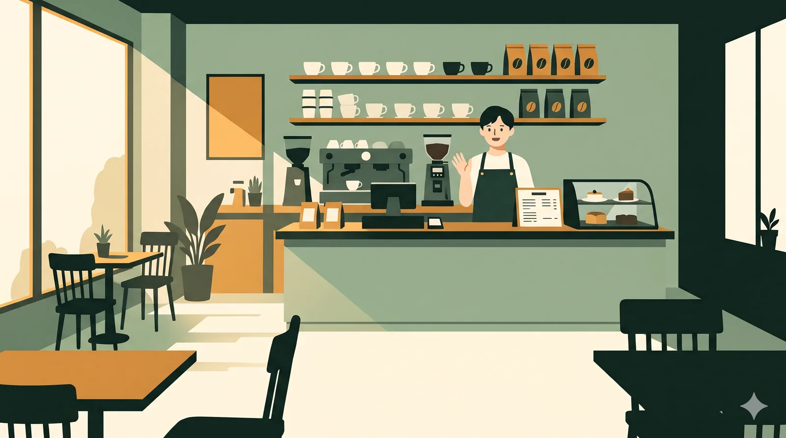

영어로 하루를
살아 봐요
어떤 시간을 영어로 살아 볼까요? 파트는 나중에 바꿔도 돼요.
지금 영어로 말하는 건
나에 대해 알려 주세요
모두 비워 둬도 돼요. 넣으면 대화가 나에게 맞춰져요.
AI 대화 상대를 깨울 열쇠
장면은 키 없이도 다 할 수 있어요. 밤에 친구와 말하기(AI 말 걸기)만 Google Gemini 무료 키가 필요해요. 키는 이 기기에만 저장되고, 무료 키로 보낸 대화는 Google이 학습에 쓸 수 있어요.
Jamie
오늘 다시 써 볼 말
대화 시작3:00
장면에서 건진 말
내일 한 번 더 나올 말
말 걸기에서 막힌 말
헷갈리는 발음
흔히 잘못 읽는 단어 35개
그림엽서
줄어드는 멈춤
말 걸기에서 1분에 몇 번 멈췄는지예요. 낮아질수록 술술 나와요.
지난 대화
문제 고르기
말하기 문제끄면 말하기 대신 문장 만들기가 나와요
듣기 문제끄면 듣기 대신 읽기 문제가 나와요
문장 자동으로 읽어 주기
효과음
읽어 주는 빠르기